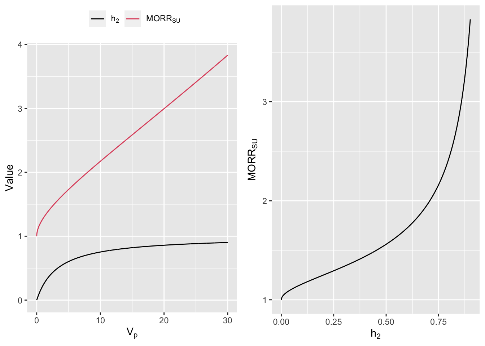

| Model 1 (95%CI) | Model 2 (95%CI) | Model 3 (95%CI) | |
|---|---|---|---|
| \(V_p\) | 0.59 (0.49-0.71) | 0.68 (0.57-0.81) | 0.66 (0.55-0.79) |
| Heritablity | 0.15 (0.13-0.18) | 0.17 (0.15-0.2) | 0.17 (0.14-0.19) |
| \(\text{MORR}_{su}\) | 1.16 (1.13-1.19) | 1.18 (1.15-1.22) | 1.18 (1.14-1.21) |
본 연구는 김진섭 대표가 계획했던 연구로, 결과적으로 학술지 게재에 실패했다는 것을 미리 알려드립니다.
Abstract
Heritability는 trait의 유전적인 측면을 정량적으로 설명하는 지표로 genetic study에서 흔히 쓰이는 지표이다. \(Y\)가 continuous variable일 때는 Intraclass Correlation Coeffcient(ICC) 혹은 Variance Partition Coefficients(VPC)의 형태로 heritability를 간단히 표시할 수 있으나, binary trait에는 이를 그대로 적용할 수 없다. 이에 liability threshold model 등의 다양한 approximation 방법이 이용되고 있으나 결과 해석의 어려움이 문제로 지적되고 있다. 한편 binary trait의 경우 sibling recurrence risk ratio(\(\lambda_s\))가 유전적인 부분을 표현하는 직관적인 지표로 쓰이고 있으나 prevalence값이 필요하고 covariate 보정이 안되는 한계점이 있다. 이에 저자는 binary multilevel study에서 이용되는 Median Odds Ratio(MOR)을 이용하여 binary trait의 유전적인 정도를 평가하는 편하고 직관적인 지표인 Median OR Ratio(\(\text{MORR}_{SU}\))을 제안하였으며 Healthy Twin Study, Korea의 hypertriglycemia trait에 적용하여 간단하며 직관적으로 유전적인 정도를 측정할 수 있었다. 이 지표가 binary trait에서 유전적인 정도를 표현하는 새로운 지표로서 heritability나 \(\lambda_s\)를 보완할 수 있을 것으로 확신한다.
Introduction
Heritability는 continuous trait에서 polygenic effect가 설명할 수 있는 정도를 측정하는 지표로 전체 분산 중 polygenic effect가 설명하는 비율(the portion of phenotypic variance in a population attributable to additive genetic factors)로 정의되며, trait의 정규분포 가정이 깨지지 않는다면 mixed effect model 등을 이용하여 쉽게 구할 수 있다.(Manolio et al. 2009; Vattikuti 2012). Mixed effect model의 결과에서 polygenic effect의 분산과 residual의 분산이 추정되고 이를 통해 전체분산과 polygenic effect가 설명하는 분율을 계산하는 것인데 이는 Intraclass Correlation Coeffcient(ICC) 또는 Variance Partition Coefficients(VPC)의 형태이며, mixed effect model을 이용함으로서 covariate(age, sex, etc..)들을 보정할 수 있는 장점이 있다.
그러나 binary trait일 때는 이 방법으로 heritability를 계산할 수가 없다. 보통 질병에 걸릴 확률 \(p\)가 Logistic distribution을 따른다고 가정하고 logistic regression model을 이용하게 되는데 이 때, Continuous variable에서 한 것처럼 추정된 variance of polygenic effect의 분산은 probability의 logit function의 scale에서 계산된 것이며, 전체분산은 probability scale에서 계산이 되기 때문에 이를 단순하게 분자, 분모로 하여 계산할 수 없다(Browne et al. 2005). binary trait에서 heritability를 구하는 방법으로는 first order Taylor series expansion을 이용하여 logit함수에 대한 회귀식을 \(Y\)에 대한 회귀식으로 approximation하여 linearisation 하는 방법, simulation을 이용하는 방법, latent variable을 이용하는 방법 등이 제시되어 있는데 이들 방법은 근본적으로 근사값의 계산이라는 한계점이 있으며, 해석을 어떻게 해야 되는지도 문제가 된다(Browne et al. 2005; Bonnet 2016; Vigre et al. 2004; Davies et al. 2015; Tenesa and Haley 2013).
binary trait에서 유전적인 정도를 표현하는 또다른 방법으로 recurrence risk ratio라는 것이 있는데, 이 중 흔히 이용되는 것은 sibling recurrence risk ratio(\(\lambda_s\))로 일반 인구집단의 prevalence에 비해 affected people의 sibling 집단에서의 prevalence가 몇배나 더 높은지를 표현하며 직관적으로 이해할 수 있는 지표라는 장점이 있다(Rybicki and Elston 2000). 그러나 이 값은 일반 인구 집단에서의 prevalence를 정확히 측정해야 한다는 부담을 갖고 있으며 ascertainment bias에 민감하며, polygenic effect의 변화없이 common environmental factor의 영향에 의해서도 변화할 수 있다는 문제점이 있다(S.-W. Guo 1998, 2002; S.-W. Guo 2000).
한편 binary trait의 multilevel analysis에서 group level의 효과를 쉽게 이해하기 위해 Median Odds Ratio(MOR)라는 개념이 제시되었는데, 이것의 정의는 “the median value of the odds ratio between the group at highest risk and the group at lowest risk when randomly picking out two groups”이다(Merlo et al. 2006). MOR은 group변수의 분산만을 이용하여 쉽게 계산될 수 있으며 OR scale이기 때문에 이해하기도 쉬운데, 1보다 클수록 group effect가 크고 1에 가까울수록 group effect가 없다고 해석할 수 있다(Larsen et al. 2000; Larsen and Merlo 2005; Merlo et al. 2006).
이에 저자는 multilevel logistic regression에서 이용하였던 MOR의 개념을 이용하여 binary trait의 유전적인 정도를 측정하는 새로운 지표인 Median OR Ratio between Sibling Pairs and Unrelated Pairs(\(\text{MORR}_{SU}\))을 소개할 것이다. 본 지표는 sibling pairs끼리의 OR에 비해 unrelated pairs끼리의 OR의 값이 대략적으로(median) 얼마나 높은가를 나타내며, 유전적인 부분이 전혀 없는 질병이라면 sibling pair에서나 unrelated pair에서의 OR이 같게 되어 \(\text{MORR}_{SU}\)의 값은 1이 된다. 반면에 이 값이 크면 클수록 sibling pair끼리의 질병발생 양상이 unrelated pair끼리의 그것보다 비슷해지고 이는 유전적인 부분이 큰 질병임을 뜻한다. 본 지표는 hierarchial generalized linear model(HGLM)를 통하여 계산할 수 있으며, covariates를 보정할 수 있다는 heritability의 장점과 쉽게 해석되는 \(\lambda_s\)의 장점을 동시에 갖고 있다. 반대로 말하면 직관적인 해석이 어려운 heritability의 단점과 prevalence 정보가 필요하며 covariate보정이 어려운 \(\lambda_s\)의 단점을 보완하였다고도 할 수 있다. (Lee and Nelder 1996). 본 연구에서는 \(\text{MORR}_{SU}\)의 개념을 소개한 후 실제 데이터인 Healthy twin study, Korea의 hypertriglycemia trait에 적용하여 유전적인 부분을 해석해 볼 것이다(SUNG et al. 2006).
Method
Breif review of Meidan OR
먼저 MOR에 대해 간략하게 요약하여 설명하겠다(Larsen et al. 2000).
\(Y_{ij}\)를 \(j\)th group의 \(i\)th individual의 health status라 하고(case: 1, control: 0), \(X_{ij}\)를 vector of covariates, \(G_j\)를 \(j\)th group의 effect라 정의하자. 이 때 multilevel logistic regression의 formula를 mixed effect model로 표시하면 다음과 같다.
\[ \begin{aligned} \text{Logit}[Pr(Y_{ij}=1|X_{ij},G_j)]=\beta_0+X_{ij}'\beta_1+G_j \end{aligned} \]
(\(\beta_0\): intercept, \(\beta_1\): vector of fixed regression coefficients, \(G_j\): random intercept \(G_j\sim \text{iid } N(0,V_g)\))
이 때 Conditional Odds는
\[ \begin{aligned} \text{Odds}[Pr(Y_{ij}=1|X_{ij},G_j)]=\exp{(\beta_0)}\exp{(X_{ij}'\beta_1)}\exp{(G_j)} \end{aligned} \]
로 표현할 수 있으며 X가 고정되어 있을 때 임의로 뽑은 \(j\)th Group과 \(k\)th Group의 Odds ratio는
\[ \begin{aligned} \frac{\text{Odds}[Pr(Y_{ij}=1|X,G_j)]}{{\text{Odds}[Pr(Y_{ik}=1|X,G_k)]}}=\exp{(G_j-G_k)} \end{aligned} \]
가 되고 Odds가 큰그룹을 Odds가 작은 그룹과 비교한다면 \(\text{OR}=\exp{|G_j-G_k|}\)이다. 이제 \((G_j-G_k)\sim N(0,2V_g)\) 임을 이용하여 이것의 중앙값(median)을 계산하면
\[ \begin{aligned} \text{MOR} = \exp{(\sqrt{2V_g}\times \Phi^{-1}{(0.75)})}\simeq \exp{(0.95\sqrt{V_g})} \end{aligned} \]
이 되고 이를 MOR로 정의한다. MOR은 VPC와 다르게 오직 group variable의 분산인 \(V_g\)만 가지고 계산될 수 있어 그 자체값과 95% 신뢰구간을 간단히 계산할 수 있으며, MOR\(=1\) 이라면 group variable의 effect가 없다고 해석할 수 있고 MOR이 커질수록 group variable의 effect가 크다고 해석할 수 있다.
Formula’s of \(\text{MORR}_{SU}\)
이제 \(\text{MORR}_{SU}\)의 수식을 유도하여 보자. \(Y_{i}\)를 \(i\)th individual의 health status라 하고(case: 1, control: 0, \(1\le i \le n\)), \(X_{i}\)를 vector of covariates, \(G_i\)를 \(i\)th individual의 polygenic effect라 정의하자. 이제 polygenic model을 수식으로 나타내면 다음과 같다.
\[ \begin{aligned} \text{Logit}[Pr(Y_{i}=1|X_{i},G_i)]=\beta_0+X_{i}'\beta_1+G_i \end{aligned} \]
(\(\beta_0\): intercept, \(\beta_1\): vector of fixed regression coefficients, \(G_i\): polygenic effect of \(i\)th individual)
한편 \(G_i\)들의 vector를 \(G=(G_1,G_2,\cdots,G_n)'\)이라 하면, \(G\sim N(0,V_p\Sigma)\) 이 된다(\(\Sigma\): genetic relationship matrix, \(V_p\): variance of polygenic effect).
이제 Conditional Odds를 계산해보면
\[ \begin{aligned} \text{Odds}[Pr(Y_{i}=1|X_{i},G_i)]=\exp{(\beta_0)}\exp{(X_{i}'\beta_1)}\exp{(G_i)} \end{aligned} \]
로 표현할 수 있으며 임의로 뽑은 \(i\)th individual과 \(j\)th individual의 Odds ratio는 \(X\)가 같을 때 다음과 같이 표현된다.
\[ \begin{aligned} \frac{\text{Odds}[Pr(Y_{i}=1|X,G_i)]}{{\text{Odds}[Pr(Y_{j}=1|X,G_j)]}}=\exp{(G_i-G_j)} \end{aligned} \]
이제 두 가지 경우를 생각하자.
\(i\)와 \(j\)를 unrelated individuals에서 뽑았을 경우이다. 이 때는 앞서 MOR과 마찬가지로 \((G_i-G_j) \sim N(0,2V_g)\)가 된다.
\(i\),\(j\)를 sibling pair에서 뽑았다면, 즉 \(i\)와 \(j\)가 항상 sibling이라면 \(Cov(G_i,G_j)=\frac{1}{2}V_g\) 이므로, \((G_i-G_j) \sim N(0,V_g)\)가 된다.
이제 unrelated individual과 sibling을 한 쌍씩 뽑아 각각 \(G_i, G_j\)와 \(G_k, G_l\)이라고 하면 Odds Ratio의 비인 OR Ratio(ORR)를 다음과 같이 정의한다.
\[ \begin{aligned} \text{ORR}_{SU}=\frac{\text{OR}_{unrelated}}{\text{OR}_{sibling}}=\frac{\exp{|G_i-G_j|}}{\exp{|G_k-G_l|}} = \exp{(|G_i-G_j|-|G_k-G_l|)} \end{aligned} \]
\(|G_i-G_j|-|G_k-G_l|\)는 \(|N(0,2V_g)| - |N(0, V_g)|\) 의 분포를 따르는 것을 이용하여 median값을 계산하면 약 \(0.2453\times \sqrt{V_p}\)이고 최종지표인 Median OR Ratio(MORR)은 아래와 같다(Appendix).
\[ \begin{aligned} \text{MORR}_{SU}= \exp{(0.2453\times \sqrt{V_p})} \end{aligned} \]
즉 sibling pair들에서의 polygenic effect의 OR과 unrelated에서의 polygenic effect의 그것을 비교한 지표이며 범위는 1부터 무한대까지이다. \(\text{MORR}_{SU}\)가 1이면 unrelated pair에서의 질병발생 양상의 차이가 sibling pair에서의 그것과 같게 되어 유전적인 부분이 전혀 없다고 해석할 수 있다. 값이 커질수록 sibling pair끼리는 unrelated pair끼리보다 질병발생 양상이 비슷하다고 볼 수 있으며 이는 곧 유전적인 부분이 큰 것으로 이해할 수 있다.
Apply to Real Data
Healthy Twin Study, Korea의 데이터에 본 지표를 적용하였다(SUNG et al. 2006). 가족-쌍둥이 구조로 이루어진 3,461명의 사람 중 지질검사와 음주, 흡연 정보가 있는 2,729명을 대상으로 150이상을 case, 150미만을 control로 정의하였으며 아무것도 보정하지 않은 Null model(Model 1), 성별과 연령을 보정한 모형(Model 2), 그리고 성별, 연령, 음주, 흡연력을 보정한 모형(Model 3)에 대해서 각각의 \(V_p\)값과 그에 따른 \(\text{MORR}_{SU}\)값을 제시하였다(Table 1). 분석은 R 3.5.1버전에서 hglm package를 이용하였다(Ronnegard, Shen, and Alam 2010).
(Heritability: Intraclass correlation coefficients(\(\frac{V_p}{V_p+\frac{\pi^2}{3}}\)), Model 1: no covariate, Model 2: age & sex as covariates, Model 3: age, sex and alcohol/smoking status as covariates)
Model 2를 살펴보면 age와 sex의 effect를 보정하고 난 후의 \(V_p\)값은 0.59(95% CI: 0.49-0.71)이고 이에 해당하는 \(\text{MORR}_{su}\)의 값은 1.18(95% CI: 1.15-1.22)였으며 이는 sibling pair의 OR에 비해 unrelated pair의 OR의 값이 대략적으로 18% 더 높다고 해석할 수 있다. 한편 Null model(Model 1)의 \(\text{MORR}_{su}\)의 값은 1.16(95% CI: 1.13-1.19)이며 age, sex, smoling status를 보정했을 때(Model 3)는 1.18(95% CI: 1.14-1.21)로 세 Model의 결과는 비슷했다. 이는 age, sex, alcohol, smoking status 보정 여부에 크게 상관없이 hypertriglycemia에 일정한 유전적인 영향이 존재함을 의미한다.
Conclusion
저자가 제시한 \(\text{MORR}_{su}\)의 개념을 이용하여 binary trait의 유전적인 정도를 직관적으로 설명할 수 있었다. 이는 해석이 어려운 heritability의 단점을 극복하였다는 의미가 있다. 또한 age, sex 등 다양한 covariates의 효과를 보정한 후의 유전적인 부분을 설명할 수 있고, 인구집단의 prevalence를 측정할 필요가 없다는 점에서 \(\lambda_s\)의 단점을 보완한 지표라 할 수 있다.
향후 heritability와 \(\lambda_s\) 각각의 장점은 살리고 단점은 보완한 이 지표가 binary trait의 polygenic effect를 직관적으로 설명하는 방법으로 널리 쓰이길 기대한다.
Appendix
Calculate MORR
\(|N(0,2V_p)| - |N(0, V_p)|\)의 median을 \(M\)이라 하자. R의 distr package를 이용하면 아래와 같이 \(V_g\)값들에 따른 \(M\)값을 쉽게 계산할 수 있다(Ruckdeschel and Kohl 2014).

이 그래프의 직선의 기울기가 바로 0.2453이고 따라서 \(\text{MORR}_{SU}= \exp{(0.2453\times \sqrt{V_p})}\)가 된다.
Compare to Other Measures

References
Bonnet, Anna. 2016. “Heritability Estimation of Diseases in Case-Control Studies.” 2016. https://arxiv.org/abs/1611.02910.
Browne, W. J., S. V. Subramanian, K. Jones, and H. Goldstein. 2005. “Variance Partitioning in Multilevel Logistic Models That Exhibit Overdispersion.” Journal of the Royal Statistical Society: Series A (Statistics in Society) 168 (3): 599–613. https://doi.org/10.1111/j.1467-985x.2004.00365.x.
Davies, Sarah W., Samuel V. Scarpino, Thanapat Pongwarin, James Scott, and Mikhail V. Matz. 2015. “Estimating Trait Heritability in Highly Fecund Species.” G3: Genes, Genomes, Genetics 5 (12): 2639–45. https://doi.org/10.1534/g3.115.020701.
Guo, Sun-Wei. 1998. “Inflation of Sibling Recurrence-Risk Ratio, Due to Ascertainment Bias and/or Overreporting.” The American Journal of Human Genetics 63 (1): 252–58. https://doi.org/10.1086/301928.
———. 2002. “Sibling Recurrence Risk Ratio as a Measure of Genetic Effect: Caveat Emptor!” The American Journal of Human Genetics 70 (3): 818–19. https://doi.org/10.1086/339369.
Guo, S.-W. 2000. “Familial Aggregation of Environmental Risk Factors and Familial Aggregation of Disease.” American Journal of Epidemiology 151 (11): 1121–31. https://doi.org/10.1093/oxfordjournals.aje.a010156.
Larsen, Klaus, and Juan Merlo. 2005. “Appropriate Assessment of Neighborhood Effects on Individual Health: Integrating Random and Fixed Effects in Multilevel Logistic Regression.” American Journal of Epidemiology 161 (1): 81–88. https://doi.org/10.1093/aje/kwi017.
Larsen, Klaus, Jørgen Holm Petersen, Esben Budtz-Jørgensen, and Lars Endahl. 2000. “Interpreting Parameters in the Logistic Regression Model with Random Effects.” Biometrics 56 (3): 909–14. https://doi.org/10.1111/j.0006-341X.2000.00909.x.
Lee, Y., and J. A. Nelder. 1996. “Hierarchical Generalized Linear Models.” Journal of the Royal Statistical Society. Series B (Methodological) 58 (4): 619–78. http://www.jstor.org/stable/2346105.
Manolio, Teri A., Francis S. Collins, Nancy J. Cox, David B. Goldstein, Lucia A. Hindorff, David J. Hunter, Mark I. McCarthy, et al. 2009. “Finding the Missing Heritability of Complex Diseases.” Nature 461 (7265): 747–53. https://doi.org/10.1038/nature08494.
Merlo, Juan, Basile Chaix, Henrik Ohlsson, Anders Beckman, Kristina Johnell, Per Hjerpe, L Råstam, and K Larsen. 2006. “A Brief Conceptual Tutorial of Multilevel Analysis in Social Epidemiology: Using Measures of Clustering in Multilevel Logistic Regression to Investigate Contextual Phenomena.” Journal of Epidemiology & Community Health 60 (4): 290–97. https://doi.org/10.1136/jech.2004.029454.
Ronnegard, Lars, Xia Shen, and Moudud Alam. 2010. “Hglm: A Package for Fitting Hierarchical Generalized Linear Models.” The R Journal 2 (2): 20–28. http://journal.r-project.org/archive/2010-2/RJournal_2010-2_Roennegaard~et~al.pdf.
Ruckdeschel, Peter, and Matthias Kohl. 2014. “General Purpose Convolution Algorithm in S4 Classes by Means of FFT.” Journal of Statistical Software, Articles 59 (4): 1–25. https://doi.org/10.18637/jss.v059.i04.
Rybicki, Benjamin A., and Robert C. Elston. 2000. “The Relationship Between the Sibling Recurrence-Risk Ratio and Genotype Relative Risk.” The American Journal of Human Genetics 66 (2): 593–604. https://doi.org/10.1086/302778.
SUNG, JOOHON, SUNG-IL CHO, YUN-MI SONG, KAYOUNG LEE, EUN-YOUNG CHOI, MINA HA, JIHAE KIM, et al. 2006. “Do We Need More Twin Studies? The Healthy Twin Study, Korea.” International Journal of Epidemiology 35 (2): 488–90. https://doi.org/10.1093/ije/dyi294.
Tenesa, Albert, and Chris S. Haley. 2013. “The Heritability of Human Disease: Estimation, Uses and Abuses.” Nature Reviews Genetics 14 (2): 139–49. https://doi.org/10.1038/nrg3377.
Vattikuti, Juen AND Chow, Shashaank AND Guo. 2012. “Heritability and Genetic Correlations Explained by Common SNPs for Metabolic Syndrome Traits.” PLOS Genetics 8 (3): 1–8. https://doi.org/10.1371/journal.pgen.1002637.
Vigre, Håkan, Ian R. Dohoo, Henrik Stryhn, and Marie Erika Busch. 2004. “Intra-Unit Correlations in Seroconversion to Actinobacillus Pleuropneumoniae and Mycoplasma Hyopneumoniae at Different Levels in Danish Multi-Site Pig Production Facilities.” Preventive Veterinary Medicine 63 (1): 9–28. https://doi.org/https://doi.org/10.1016/j.prevetmed.2004.02.002.
Citation
BibTeX citation:
@online{kim2018,
author = {Jinseob Kim},
title = {New {Scale} {Measure} of {Heritability} in {Binary} {Trait}
{Using} {Median} {Odds} {Ratio:} {Median} {OR} {Ratio}},
date = {2018-11-08},
url = {https://blog.zarathu.com/posts/2018-11-08-medianorratio},
langid = {en}
}
For attribution, please cite this work as:
Jinseob Kim. 2018. “New Scale Measure of Heritability in Binary
Trait Using Median Odds Ratio: Median OR Ratio.” November 8,
2018. https://blog.zarathu.com/posts/2018-11-08-medianorratio.